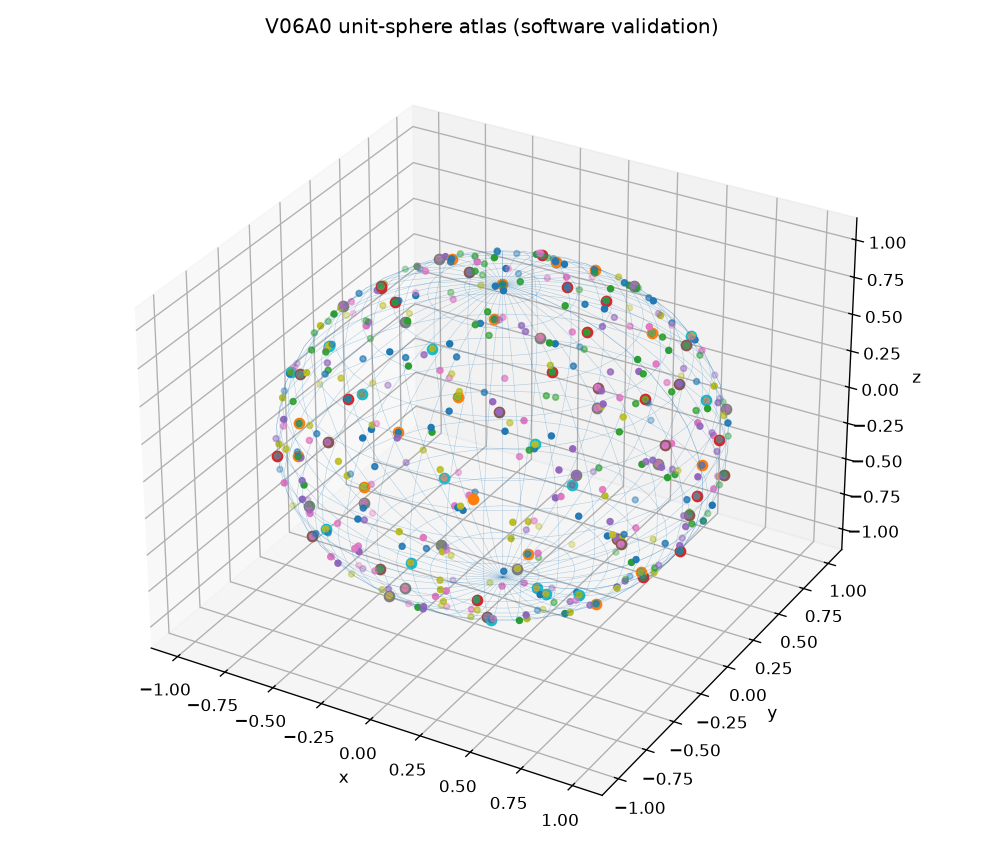

SOFTWARE_VALIDATION, not a
DecompositionCertificate and not a spatial-5R
FixedPositionParentResult. L5 reconstruction remains unresolved.| problem | analytical_unit_sphere |
|---|---|
| charts | 77 |
| components | 1 |
| closed component | True |
| approximate hull area | 12.3814 (target 12.5664) |
| declared chart radius | 0.45 |
| rejected duplicate centers | 86 |

Reproduce:
PYTHONPATH=src python -m grashof_workspace.spatial_experiments.v06a0 --outdir results/kinematic_decomposition/v06a0